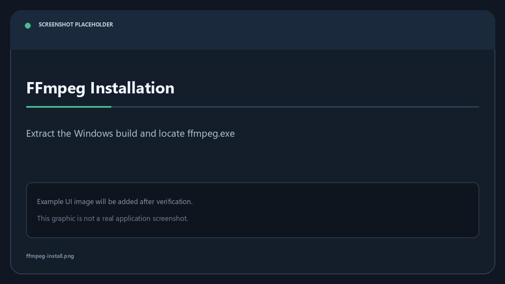
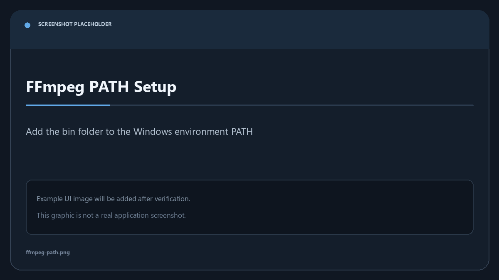
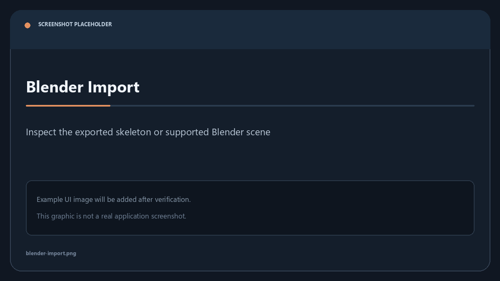
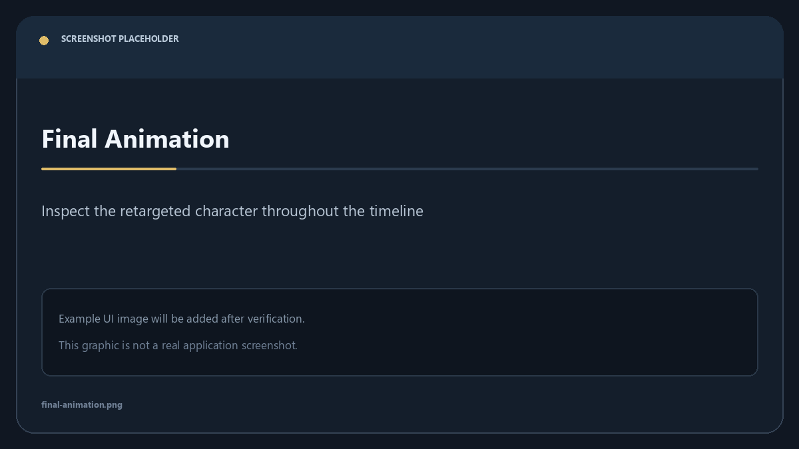

A FIELD GUIDE FOR CREATORS
FreeMoCap + Blender
Motion Capture Workflow
Record motion on an iPhone, process it with FreeMoCap, and animate a Mixamo-rigged Blender character.
THE PIPELINE 6 STEPS
iPhone recordingCapture a clean, steady take01
FFmpegConvert only when needed02
FreeMoCapTrack and review motion03
Motion trackingInspect the reconstructed data04
BlenderImport supported motion data05
Mixamo characterRetarget, inspect, and animate06
FROM CAMERA TO CHARACTER
YOUR WORKFLOW, UNPACKED
Motion capture, made approachable.
Start with the footage you have. Move through the pipeline one clear step at a time.
01 / CAPTURE
Record yourself
Frame the full body, steady the phone, and capture clean source footage.
Capture essentials → 02 / TRACKProcess with FreeMoCap
Import a session, run the supported pipeline, and inspect its output.
Explore processing → 03 / ANIMATEAnimate in Blender
Bring motion into Blender and map it to a Mixamo-rigged character.
Learn retargeting →KEEP YOUR PLACE
Setup checklist
Tick items as you complete them. Progress stays in this browser on this device.
Your setupSaved locally · not synced to GitHub
0 of 7 complete
Checklist is optional—use it to track your own session.
A VISUAL COMPANION
See each step take shape.


FFmpeg installation

FFmpeg PATH setup Calibration board
Calibration board
 Calibration process
Calibration process
 FreeMoCap import
FreeMoCap import


Blender import Rokoko retarget
Rokoko retarget


Final animationIllustration cards are labeled placeholders—not application screenshots. Replace them with verified captures when available.